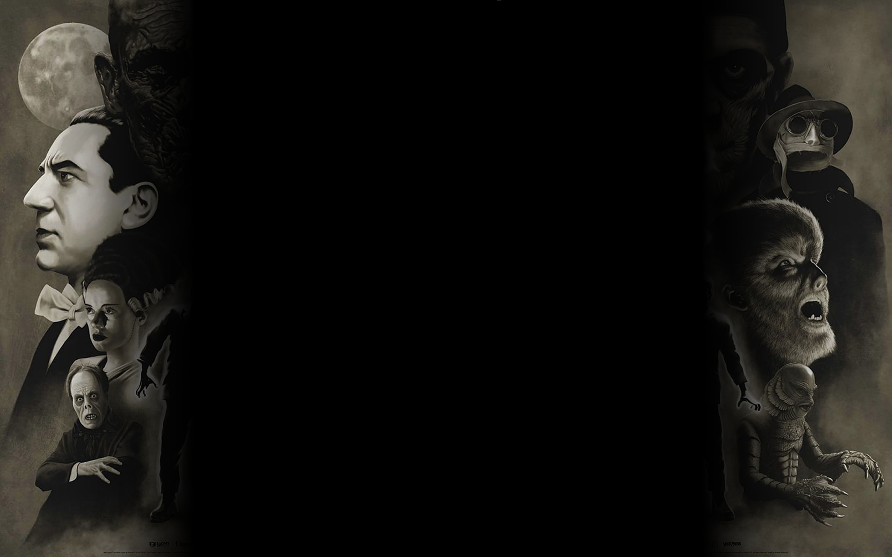

UNIVERSAL HORROR MOVIE MONSTERS
HOME ◉
ALTERNATE VERSION ◉
RYAN'S HOMEPAGE ◉


GILL-MAN
The Gill-man is the main antagonist of the 1954 universal film Creature from the Black Lagoon.
In each film, the Gill-man is protrayed by my multiple actors each changing with each film.
The Gill-man also appeared in the least amount of films out of all the Universal Monsters only being in 3.